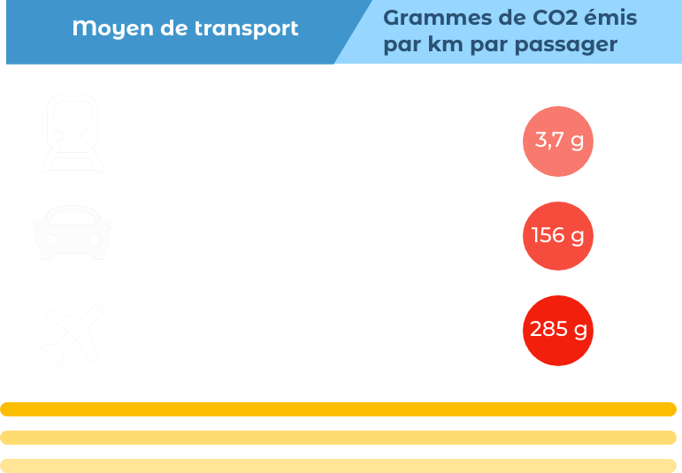
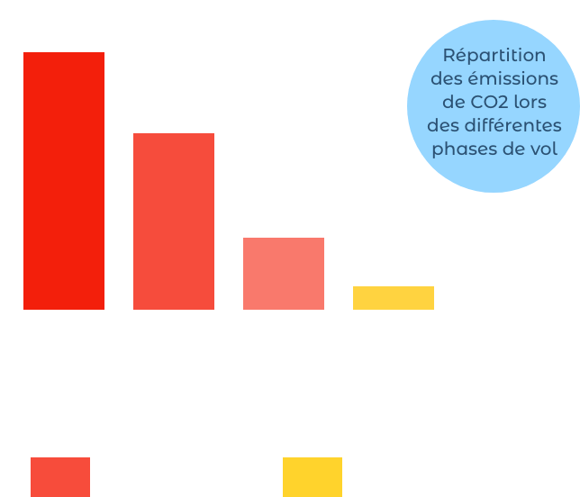

Problème écologique
Si vous êtes arrivé sur cette page, c’est que vous êtes concerné par la pollution de l’air !
Quel rêve de pouvoir faire New York - Vienne dans un vol privé en première classe ! Des sièges confortables, de l’espace pour dormir, pas de voisin incontinent en bout de rangée … Mais ce luxe n’est pas sans conséquences. Au-delà du prix exorbitant, il y a un coût environnemental alarmant. En effet, lorsqu’on parle de gaz à effet de serre , on pense immédiatement à la voiture. Mais un avion vole plus loin avec une masse plus lourde. Il va donc consommer plus. Il carbure au kérosène, un hydrocarbure (pétrole) qui émet beaucoup de CO2 lors de sa combustion.
D’après le ministère de la Transition écologique, dans son guide Info GES 2018, on obtiendrait les résultats suivants:
On voit donc qu’un avion émet beaucoup plus de CO2 que la voiture ou le train. Vous pourriez me dire « Mais le CO2 n’est pas dangereux pour la santé ! » Dans Environnement, votre santé en danger, le Dr Peytavin confirme que ce dernier n’a pas de répercussion sur le corps humain, contrairement aux particules libérées par les voitures. Cependant, l’univers n’est pas centré sur l’homme et la Terre abrite d’autres espèces. Or, cette émission artificielle de CO2 contribue très fortement à aggraver l’effet de serre, ce qui menace l’ensemble du monde végétal et animal (homme inclus). Si vous voulez en savoir plus sur ce Dr Peytavin et son livre :
Article Livre
Effet de serre
On a trop souvent tendance à l’oublier mais l’effet de serre est tout d’abord NATUREL. Il s’agit de l’élévation de la température terrestre. Sans ce phénomène, la Terre aurait une température proche de -19°C. Pas spécialement idéale pour prendre un apéritif au bord de la piscine ou pour développer la vie ! Cette hausse de température est due aux rayons du soleil piégés par l’atmosphère. Mais les gaz à effet de serre déséquilibrent le flux d’énergie qui augmente proportionnellement à l’émission de CO2. La température terrestre s’élève et les rayons infra-rouges sont envoyés dans l’atmosphère causant des trous dans la couche d’ozone. Cette dernière protège la Terre du Soleil comme une crème solaire. Elle lui évite de brûler et limite l’effet de serre.
Schéma de l’effet de serre
Conséquences
Les températures pourraient augmenter de 3,7 à 4,8°C d’ici la fin du siècle. Le réchauffement climatique cause la fonte des glaces, l’augmentation du niveau des eaux, le dérèglement des bio-systèmes, voire leur destruction, des catastrophes meurtrières, des désertifications … C’est pour cette raison que les gaz à effet de serre produits en trop grosse quantité sont nuisibles pour toutes les espèces et pour l’avenir de la planète. Selon le rapport Planète Vivante 2016 produit par WWF, entre 1970 et 2020, près de 67% des vertébrés sur Terre auront disparu. C’est la sixième extinction de masse.
« 67% des vertébrés sur Terre auront disparu en 2020»
Schéma des conséquences du réchauffement climatique
Vous comprenez donc à quel point l’émission de CO2 a des répercussions gravissimes sur la Terre. En 2017, on notait 1 vol d’avion par seconde dans le monde. En 2020, l’aviation représenterait 3% des émissions de CO2 à elle seule ! Il faut savoir qu’un avion pollue différemment selon sa phase de vol. Le régime du moteur est à 100% seulement lors du décollage. À ce moment-là, la quantité de CO2 est minimale alors que celle du NOx (gaz très toxique) est maximale. Mais cette tendance s’inverse lors de la phase de croisière. Il existe deux phases pendant lesquelles l’avion pollue de manière différente :

Cycle LTO :
(Landing and Take Off = atterrissage et décollage) Cette phase concerne le décollage, la montée, l’approche, l’atterrissage et le roulage. L’avion vole jusqu’à une altitude de 915m. La pollution est locale. Le cycle LTO est le moment où la consommation de kérosène est maximale tandis que la production de NOx (responsable de la destruction de la couche d’ozone) est la plus forte.
Phase de croisière
Cette phase se situe entre le décollage et l’atterrissage. L’avion vole à une altitude minimum de 915m. Cela correspond à la majorité du vol. La pollution se fait à l’échelon mondial ( ou au moins régional ).
La quantité de CO2 émis dépend du type du moteur, du poids de l’avion, et du nombre de ses escales. Certaines compagnies aériennes sont réputées pour être écologiques ou non. Prenons un exemple connu : le Concorde (avion de ligne supersonique). Il brûle au décollage 450L de kérosène. Or, un litre de kérosène équivaut à 3kg de CO2. Cela nous donne 1350kg de CO2 produit uniquement pour le décollage. Imaginez le résultat total de CO2 et de NOx émis au cours du vol et le bilan carbone pour la planète ! Et ce n’est qu’un avion parmi 37 millions !
Entre 2011 et 2036, on prévoit que le nombre d’avions va doubler ainsi que leur production de CO2. Mais les mentalités changent. Plusieurs compagnies aériennes ont décidé d’être plus écologiques. Quels sont donc ces nouveaux moyens ? En quoi le citoyen ordinaire est-il concerné ? Doit-il changer radicalement son mode de vie ?